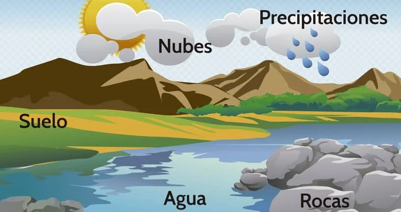
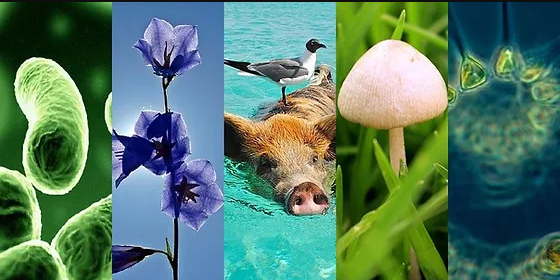

Salud y Medio Ambiente
¿De qué estamos hablando?
Dentro de los primeros, agrupados bajo la denominación de factores bióticos, forman parte, además del ser humano y del resto de animales, toda la flora del planeta junto a los hongos y a pequeños organismos que cumplen funciones esenciales para el sostenimiento de la vida, y cuyo principal representante son las bacterias.
En cuanto a los elementos sin vida, conocidos como factores abióticos, son esenciales para la subsistencia de los organismos vivos y conforman el espacio físico del ambiente, siendo los componentes básicos del ecosistema, es decir, el agua, el aire y el suelo. En cuanto a los artificiales, creados por el ser humano, cabe destacar las tradiciones, la urbanización o la cultura. La suma de todos conforma el medioambiente.
La salud ambiental engloba aquellos factores del ambiente que podrían incidir en la salud. Específicamente, está relacionada con los factores físicos, químicos y biológicos externos de las personas. Por eso, la calidad del entorno es vital para la buena salud y desarrollo de las personas

El medio ambiente y la salud están relacionados de manera estrecha. El Día Mundial del Medio Ambiente, que se conmemora cada 5 de junio desde 1974, recuerda la importancia de conservar y cuidar nuestra naturaleza y la riqueza de su biodiversidad y de sus ecosistemas, con el objetivo de concienciar a la sociedad sobre la importancia de garantizar una protección duradera del planeta y sus recursos naturales. Porque proteger el planeta es sinónimo de proteger nuestra salud.
La Organización Mundial de la Salud (OMS) estima que una de cada cuatro enfermedades en el mundo puede estar relacionada con factores ambientales, siendo diferentes en cada región del mundo, y que alrededor del 20% de las muertes en el continente europeo se deben a problemas derivados de la degradación del medio ambiente.
Cualquier organismo obtiene del medioambiente el sustento necesario para garantizar su supervivencia, no solo alimento, sino, también, refugio, aire o energía. Por eso, mantener su equilibrio resulta fundamental para asegurar la vida tal y como se conoce hoy en día. En el caso de los seres humanos, precisamos del consumo de gran cantidad de recursos naturales para comer, vestirnos o, incluso, para fabricar herramientas y otros productos que luego utilizamos en nuestras actividades diarias. Cuidar el ecosistema para hacer sostenible el uso de estos recursos y evitar su desaparición no es, por lo tanto, una filosofía simplemente bondadosa en relación con el planeta en el que vivimos, sino que nos va nuestra propia vida en ello.
¿Qué factores del medio ambiente influyen en la salud?
La salud ambiental se relaciona con elementos Físicos, Químicos y Biológicos externos a una persona que inciden en su salud. Es decir, todos aquellos que sirven de indicadores para la prevención y la creación de ambientes propicios para una adecuada salud humana.
La relación entre el medio ambiente y la salud humana se encuentra condicionada por dichos factores. Conocer cada uno de ellos ayuda a tomar medidas para cuidar y proteger a la naturaleza y a nosotros mismos.
Factores Físicos
Los factores físicos pueden ser atmosféricos o sidéricos. Por ejemplo, son aquellos que se relacionan con la calidad del aire y el cambio climático. La contaminación atmosférica o los cambios bruscos de temperatura pueden provocar en el ser humano problemas respiratorios, una mayor propensión a desarrollar alergias, complicaciones musculares y óseas, así como influir en los estados anímicos y psicológicos.
Algunos factores como las precipitaciones, la humedad, la presión atmosférica o el viento son manifestaciones naturales que pueden influir en nuestra salud, tanto física como mental, pero dependen de cada región para que sus efectos sean más o menos acusados. El ser humano ha desarrollado diversas capacidades para convivir y adaptarse a esas manifestaciones; sin embargo, el problema reside cuando, debido a la alteración del medio ambiente, estos fenómenos se hacen más extremos y, con ellos, también sus efectos en la salud humana.
La contaminación ambiental, en especial la que altera el aire que respiramos, supone un impacto negativo sobre nuestra salud. Los altos niveles de sustancias tóxicas en las ciudades es una de las causas del cambio climático y provoca enfermedades en los seres humanos.
Factores Químicos
La producción y el uso de sustancias químicas ha aumentado y, con ello, también lo ha hecho su incidencia en el medio ambiente. Podemos encontrar sustancias químicas en el aire, el agua, el suelo y en los alimentos que consumimos. Por tanto, son elementos que podemos absorber a través del sistema respiratorio. Pero también pueden llegar a nuestro organismo por el aparato digestivo o por la piel.
Dentro de la relación entre medio ambiente y salud, la contaminación del agua es una de las problemáticas más relevantes: no solo el ser humano, sino todo ser vivo, necesita este elemento para la supervivencia. Su alteración debido a los agentes contaminantes llega al ser humano y altera su salud. Por tanto, cuidar del agua es cuidar nuestro bienestar.
Factores Biológicos
Entre los factores biológicos se encuentran animales, plantas y microorganismos, es decir, las bacterias, los virus, los parásitos, los hongos, levaduras y sus micotoxinas, los vegetales y los alérgenos.
El carácter natural de estos factores implica que el ser humano estará expuesto a ellos de una manera u otra debido a la convivencia. Sin embargo, la alteración del medio ambiente provocará que la extensión de los virus, por ejemplo, sea más agresiva y que aumenten las enfermedades zoonóticas.
Mónica Fernández-Aceytuno, colaboradora de Fundación Aquae y Premio Nacional de Medio Ambiente explica qué
"Acabar con la fauna silvestre y sus hábitats provoca, por un lado, que los animales en ocasiones se acomoden a vivir en lugares humanizados, pudiendo transmitir nuevas enfermedades; y por otro lado, que los virus que llevan millones de años en el medio natural busquen otros huéspedes, entre los que nuestra especie, por su abundancia, es hoy más que nunca susceptible de convertirse en hospedador"
¿Cómo podemos mejorar nuestro medio ambiente para mejorar nuestra salud?
- Cuidando el agua
- Reduciendo el consumo de energía
- Reciclando
- Haciendo un consumo responsable
- Creando áreas verdes
El agua es el elemento más importante para la vida; sin embargo, es un recurso limitado que cada vez se agota más. En el mundo hay más de 3 mil millones de personas sin acceso a agua.
Por este motivo, cada persona debe asumir una cultura de ahorro y consumo racional. Por ejemplo, podemos tomar duchas cortas de máximo cinco minutos, evitar dejar correr el agua al realizar actividades como lavarse los dientes, afeitarse, lavarse el cabello o enjabonarse, y revisar constantemente las cañerías y cisternas del inodoro para arreglar cualquier fuga. En las zonas rurales, debemos evitar lavar vehículos directamente en los ríos o quebradas y mantener cerrados los grifos.
En nuestra vida cotidiana y, especialmente en el contexto de aislamiento social, utilizamos cada vez más la energía eléctrica. Este abuso de energía trae como consecuencia estragos en el equilibrio del medio ambiente. A mayor demanda de energía, más liberación de CO2 a la atmósfera.
Aunque no podemos detener el cambio climático, sí podemos reducir su impacto con acciones como: cambiar los focos comunes por lámparas fluorescentes, aprovechar al máximo la luz natural, desenchufar los aparatos eléctricos que no usamos, y utilizar electrodomésticos como lavadoras y refrigeradoras con eficiencia energética.
Nuestro planeta se está llenando de residuos sólidos que contaminan el aire, el suelo y el agua. El uso de plástico le está pasando factura al planeta, pues termina en el mar formando mares de microplástico contaminante que disminuyen la vida marina y por tanto, el recurso pesquero. Todas las personas podemos cuidar el medio ambiente separando nuestros residuos en diferentes contenedores, ya sean orgánicos, papel, plástico o vidrio.
La sociedad en la que vivimos nos impulsa a comprar productos que realmente no necesitamos y que tardan cientos de años en degradarse. Adquiere sólo lo indispensable y, si es posible, elige artículos con empaques hechos de materiales reciclables y sin plástico.
También, puedes empezar a consumir alimentos orgánicos que estén libres de pesticidas. De esta manera, cuidas tu salud, contribuyes con la economía de las familias productoras y la conservación de los recursos naturales.
Desde casa, podemos contribuir a la conservación de la biodiversidad de nuestro planeta cultivando árboles o diversas especies de plantas, en caso de tener un espacio más pequeño. Las plantas absorben el dióxido de carbono del ambiente y lo transforman en oxígeno, y así también mejoramos la calidad de aire que respiramos en el hogar.
Nuestro planeta es la única casa que tenemos para vivir y es urgente que todas las personas tomemos medidas para protegerlo. Realizando pequeños cambios en nuestros hábitos, juntas y juntos podemos mejorar el bienestar de las personas y contrarrestar el cambio climático.